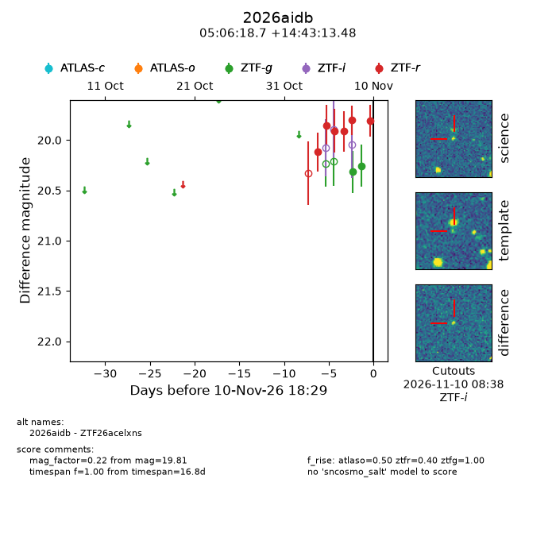
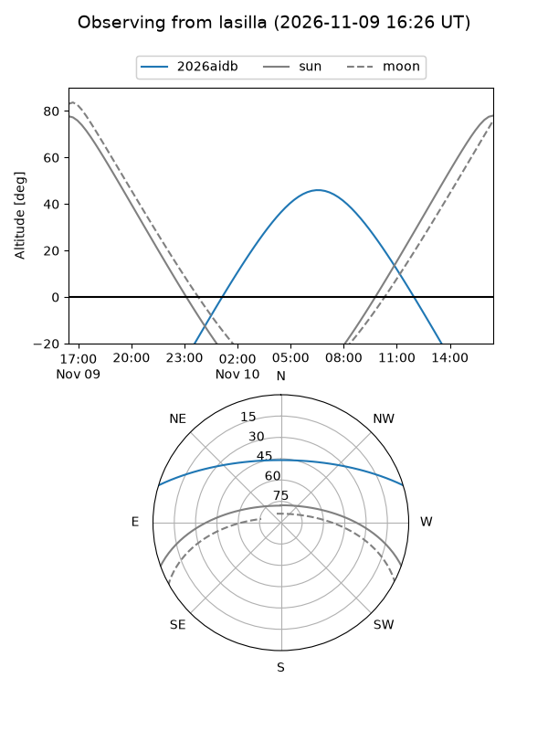
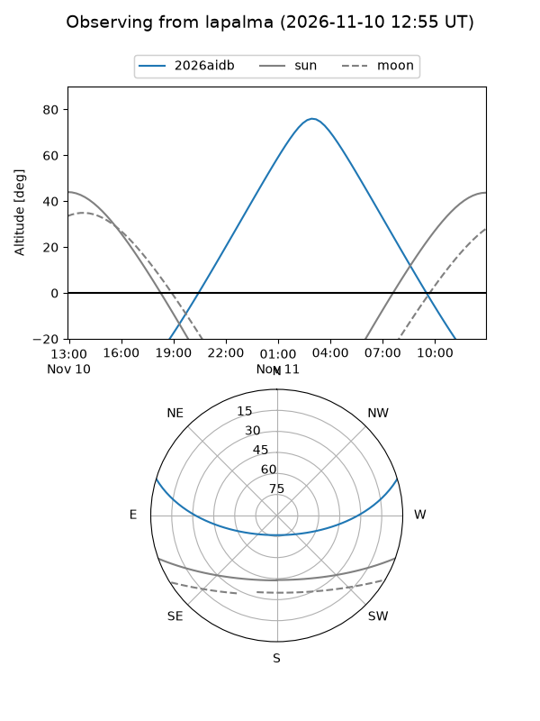
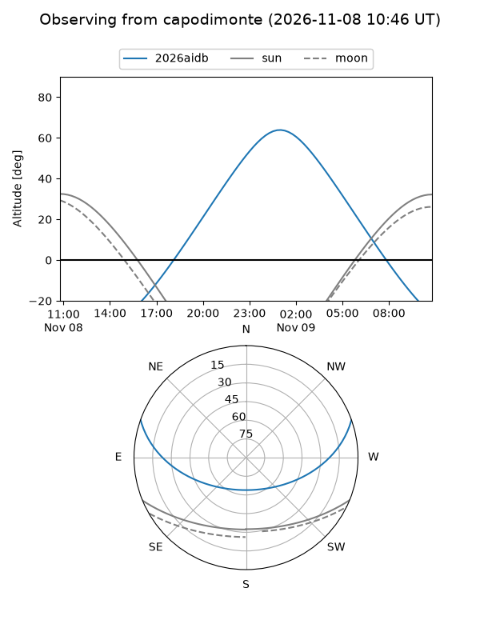
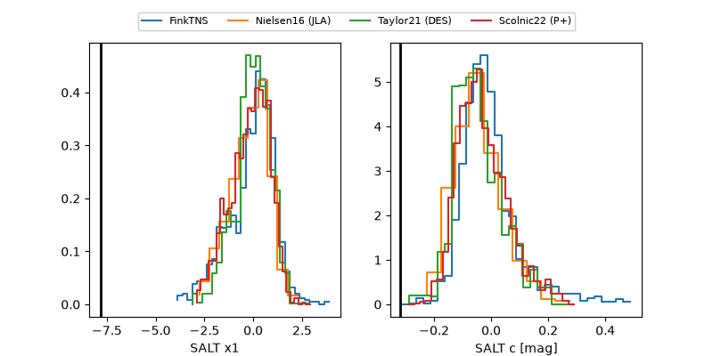

2026aidb
Target 2026aidb at 2026-11-10 18:32
Aliases and brokers:
FINK-ZTF: ztf.fink-portal.org/ZTF26acelxns
Lasair-ZTF: lasair-ztf.lsst.ac.uk/objects/ZTF26acelxns
ALeRCE-ZTF: alerce.online/object/ZTF26acelxns
YSE-PZ: ziggy.ucolick.org/yse/transient_detail/2026aidb
TNS name: wis-tns.org/object/2026aidb
Direct TNS query: direct search
alt names
ZTF26acelxns (ztf,fink_ztf)
2026aidb (tns,yse)
Coordinates:
equatorial (ra, dec) = 76.5779,+14.72041
equatorial (HMS+DMS) = 05:06:18.69,+14:43:13.48
galactic (l, b) = (187.0141,-15.38306)
Flags:
peak dt:
Photometry:
last atlaso=nan, ztfg=20.26, ztfr=19.81
1 atlaso, 2 ztfg, 6 ztfr detections
Lightcurve

Visibility



Additional plots
